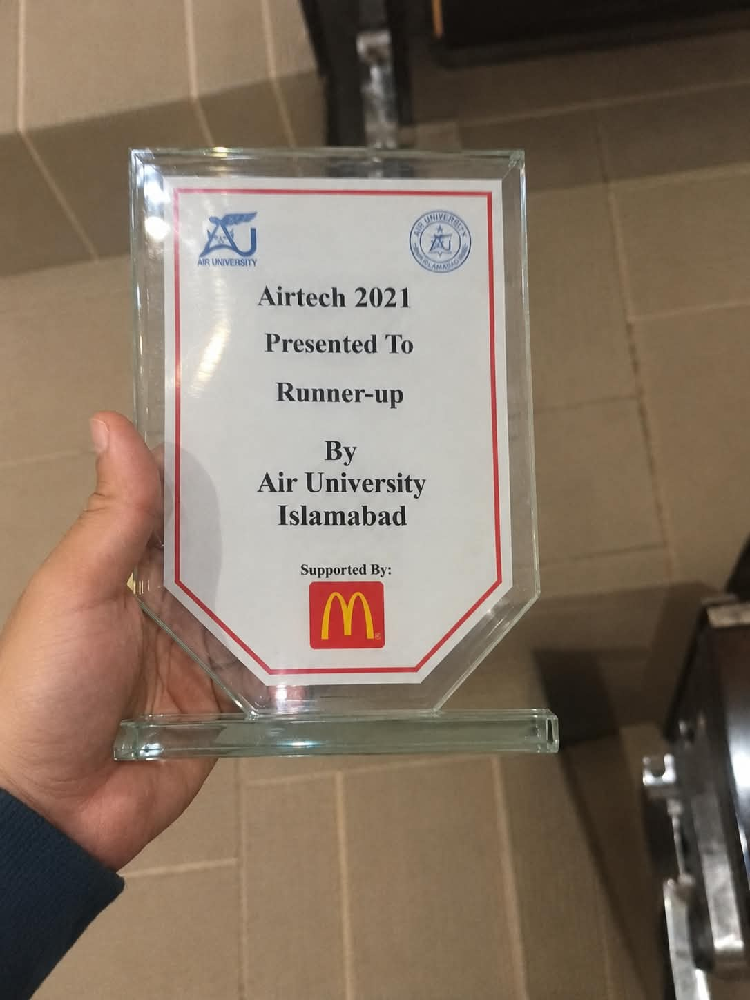
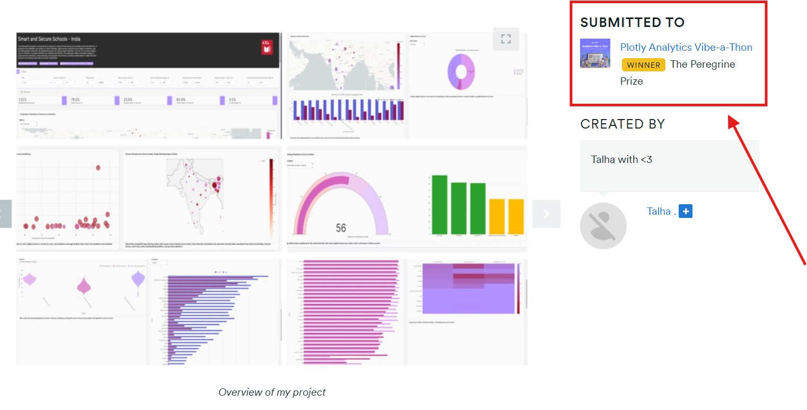

2+ Years of
AI Engineering
Experience
18
+
ProjectsDelivered
2+ Years of
AI Engineering
Experience
18
+
ProjectsKwick High Tech & Solutions | Islamabad
Independent Contractor
Siber Koza | Remote, Turkey
The Sparks Foundation
CodeClause
Codeaza Technologies | Islamabad
Engineering intelligent systems across AI Agents, Generative AI, Computer Vision, and Edge Intelligence.
Air University, Islamabad
Focused on Machine Learning, Deep Learning, Computer Vision, Agentic Architectures, and Autonomous Intelligent Systems.
Supported a study on video-based Turkish Sign Language (TSL) recognition, formulated as a temporal action classification problem in which discriminative cues are distributed across both spatial appearance and motion over time. Contributed to a systematic empirical comparison of four convolutional backbones (ResNet-50, EfficientNet-B0, MobileNetV2, and VGG16), each paired with alternative classification heads and custom network configurations, to identify architectures that balance accuracy and computational cost. Assisted in extending the work with Long Short-Term Memory (LSTM) layers, in which per-frame spatial embeddings were used to capture long-range sequential dependencies, yielding a hybrid spatiotemporal model. Helped evaluate performance using precision, recall, and F1-score, with the strongest configurations achieving promising results. Also contributed to deployment efforts by converting and exporting the trained models to TensorFlow Lite (TFLite) to assess their feasibility for on-device inference.
Assisted in developing a dual-stream multimodal framework for pull-up exercise recognition that integrates appearance-based features from RGB frames with pose-based features from skeletal keypoints. Helped evaluate three pose estimators (MediaPipe Pose, MoveNet, and OpenPose) as keypoint sources, and contributed to the design of custom architectures investigating how visual context and kinematic structure jointly affect recognition accuracy. Supported the introduction of a state-transition mechanism to represent discrete exercise phases, improving the temporal consistency of predictions. Participated in extensive architectural experimentation and evaluation, which indicated promising performance.
Accelerated feature extraction on the HOI4D egocentric dataset, cutting runtime by 66.7% (3x speedup) via asynchronous I/O prefetching, multi-threaded data loading, and GPU batch optimization. Contributed to profiling the baseline workflow to address computational bottlenecks; while the unoptimized execution faced severe latency, the optimized pipeline completed in approximately 20 minutes, substantially accelerating downstream experimental investigation and model iteration.
Assisted in building an integrated, real-time pipeline for Personal Protective Equipment (PPE) monitoring that couples object detection with vision-language models (VLMs) in a multi-stage architecture. Helped evaluate three detectors (YOLOv8, YOLO11, and RT-DETR) for identifying candidate safety violations, which are screened by a rule-based validation module encoding predefined safety criteria before flagged scenarios are passed to a VLM for structured assessment. Contributed to integrating and comparing Florence-2, PaliGemma 2, and Moondream variants on this reasoning task. Each scenario was evaluated through a ten-question structured protocol, with per-question scores aggregated into a binary safe/unsafe classification that triggers an audible alert when unsafe conditions are detected. Supported experiments on NVIDIA H100, H200, and B200 GPU infrastructure toward real-time operation.
Contributed to a study on forecasting meteorological trajectories using NASA-sourced datasets that combine geographic coordinates (latitude and longitude) with historical temporal observations. Helped build a forecasting workflow around geospatial and temporal feature engineering. Assisted in comparing the classical statistical model ARIMA against deep sequence models, namely the Recurrent Neural Network (RNN) and the Long Short-Term Memory network (LSTM), across multiple configurations and feature representations, examining how well each paradigm captures temporal dependencies and predicts future trajectory behavior.
An inter-university hackathon with students from many universities competing.

An analytics-focused hackathon with around 200 participants.

The competition focused on RAG. I built Margalla Guide, which automatically picks up the user's location (latitude and longitude) and guides them to a place. Once they arrive, it suggests good spots for photos and bird caves. I used data like Reddit comments to power the recommendations.
Conducted by VisionRD (organizer). Built a real-time temporal action segmentation system utilizing a 3D CNN + LSTM architecture for assembly-line process verification at Toyota Haval, ensuring step compliance in manufacturing workflows where an omitted step requires full process restart. The deployed solution remains in active production use.